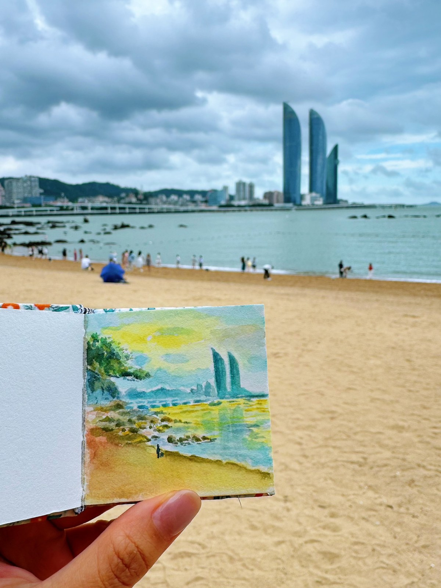
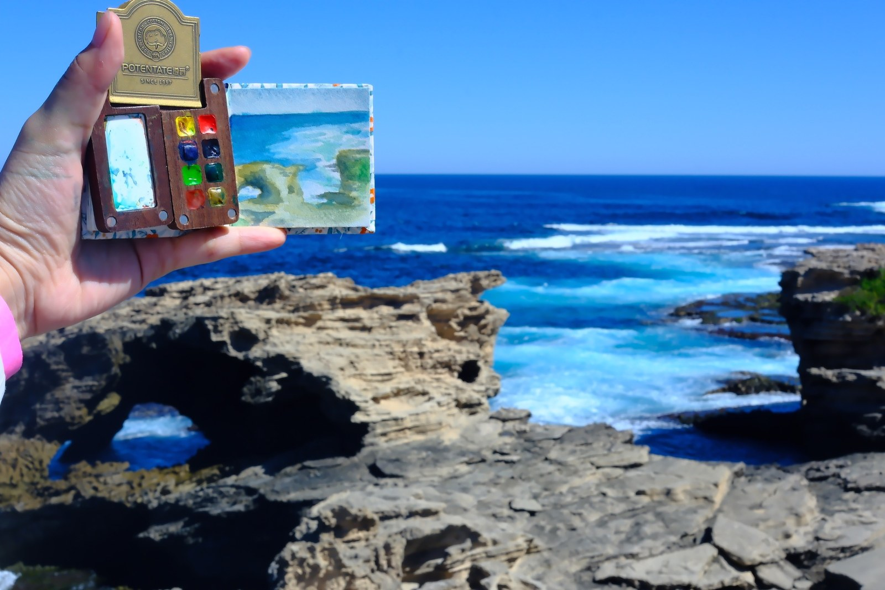
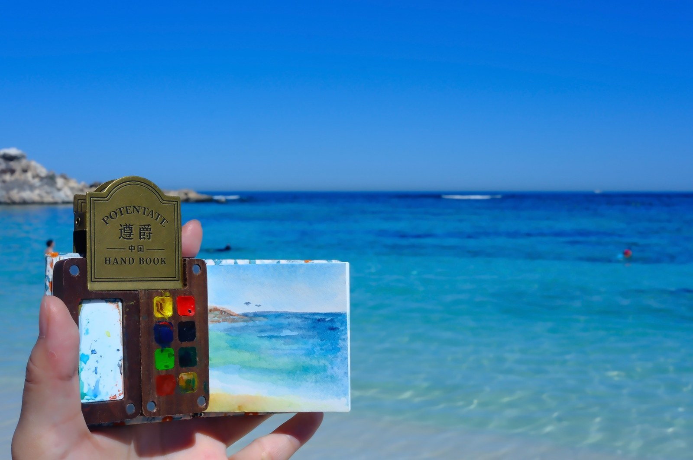
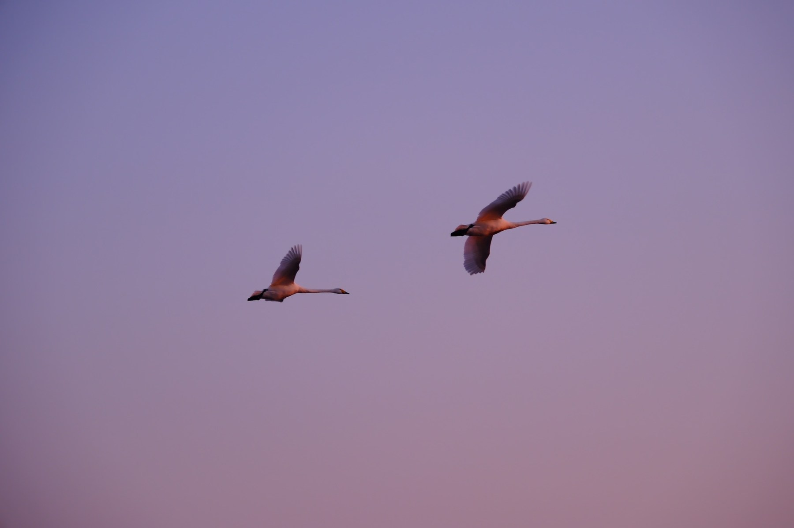
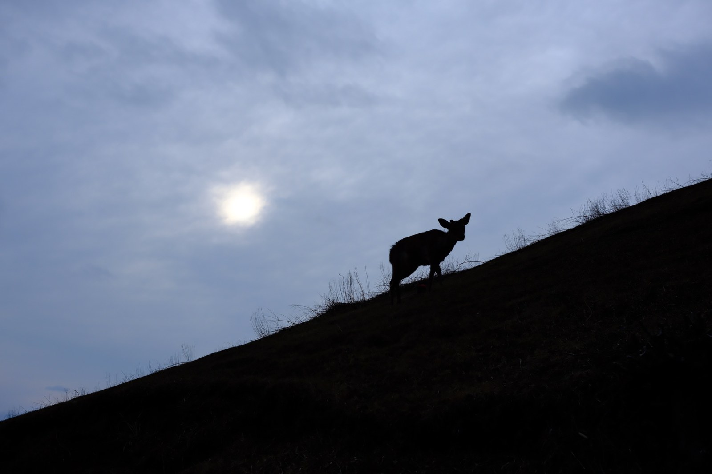
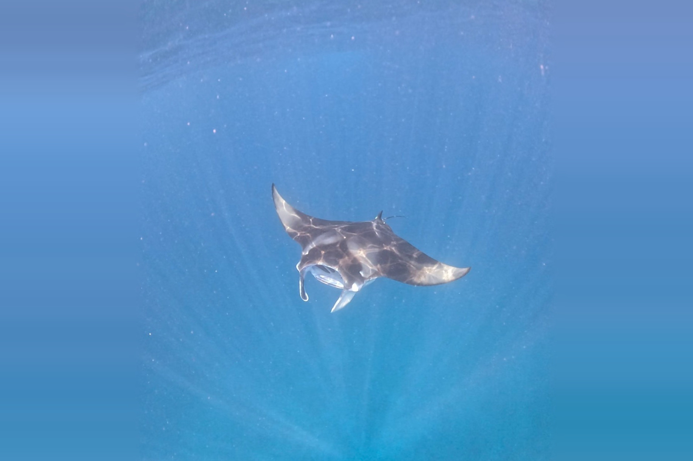
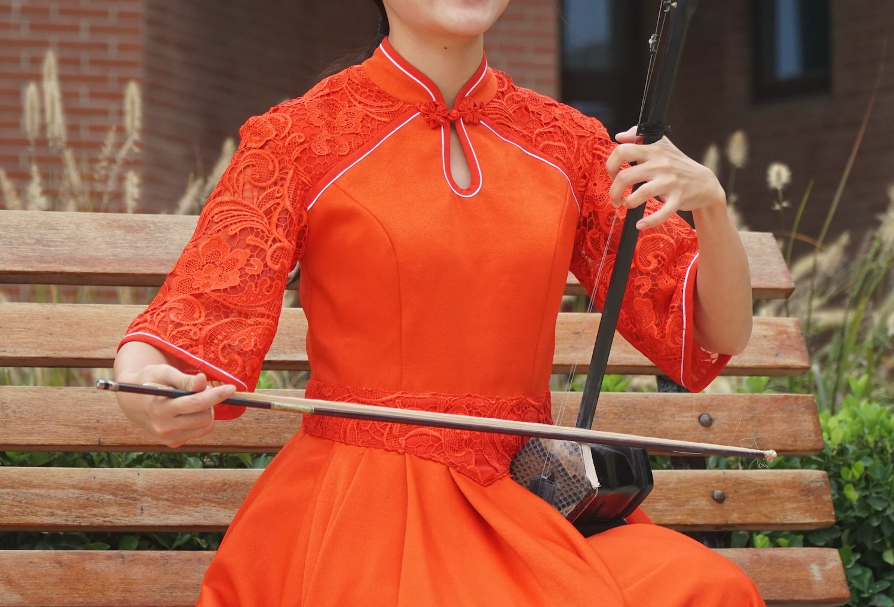
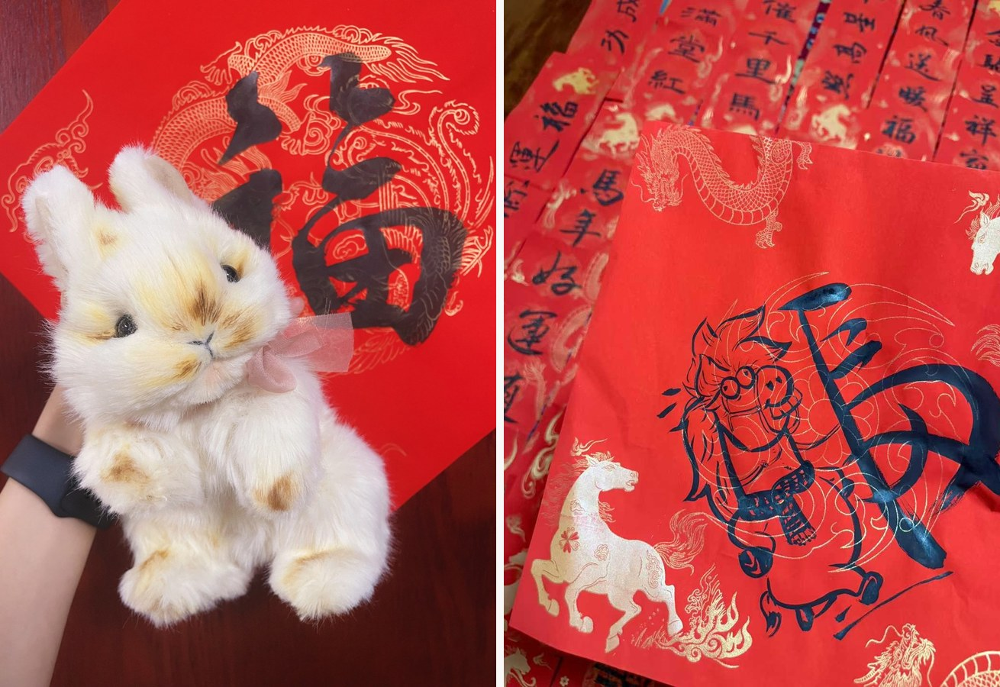
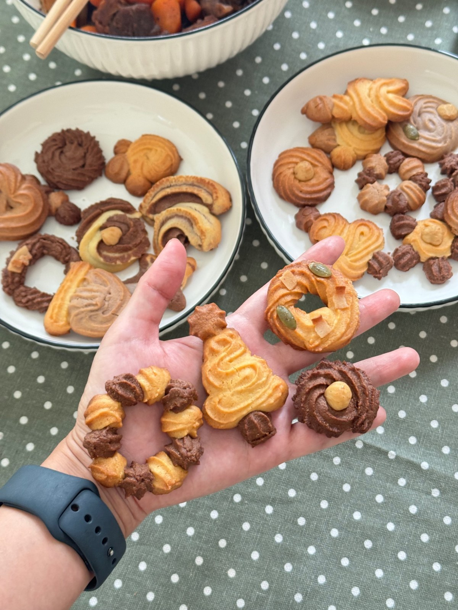

Outside academia
Life outside academia
Beyond research, I enjoy traveling with a sketchbook, playing music, and making things by hand. Taking everyday life seriously keeps me curious about people—and about social science.
Holiday Highlights: Travel, Nature & Beauty
Travel with a sketchbook
I often prefer a brush to a camera. Sketching lets me experience a moment more fully—and remember it long afterward.



Birdwatching, Hiking & Diving
I have always been fascinated by life in all its forms—in the sky, on land, and beneath the sea.



Everyday Moments: Music, Handcrafts & Rituals Across Cultures
Music
Writing helps me express ideas; music gives voice to feelings. I enjoy listening to and playing both traditional Chinese and Western classical music.

Handcrafting & celebrating
Whether a holiday comes from Eastern traditions or Western fashions matters less to me. I find joy in taking everyday life seriously.

